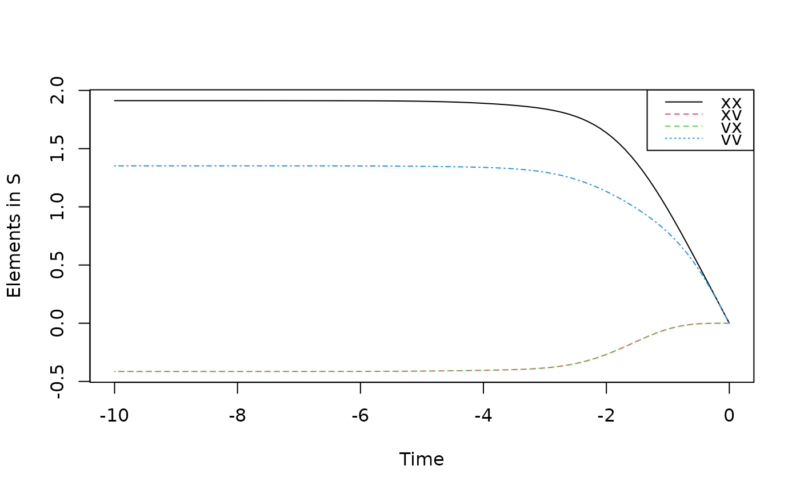
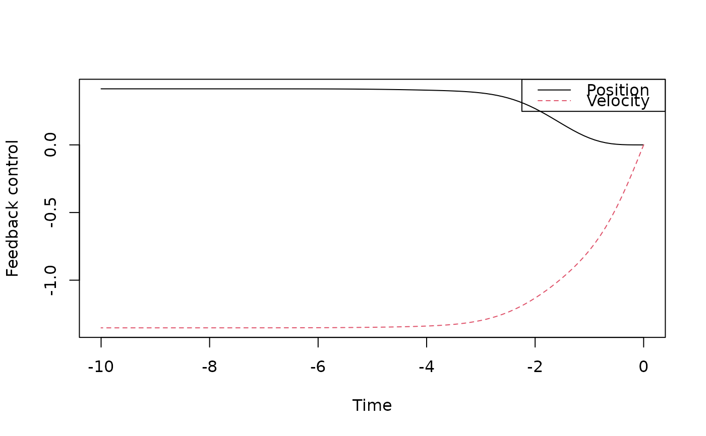

Solve the time-varying LQR (Linear Quadratic Regulator) problem
Arguments
- times
numeric vector of time points
- A
system matrix, n-by-n numeric array
- F
control matrix, n-by-m numeric array
- G
noise matrix, n-by-l numeric array
- Q
state penalty running cost, n-by-n numeric array specifying the quadratic form in x in the running cost
- R
control penalty in running cost, m-by-m numeric array specifying the quadratic form in u in the running cost
- P
terminal state penalty, n-by-n numeric array specifying the quadratic form in x in the terminal cost
Value
A list containing times, A, F, G, Q, R, P: The input arguments S the value function. A length(times)*n*n array containing, for each time point, the quadratic form in x in the value function s the value function. A length(times) vector containing, for each time point, the off-set in the value function, i.e. the value for x=0 L the optimal control. A length(times)*m*n array containing, for each time point, the gain matrix Lt that maps states to optimal controls
Examples
# Feedback control of a harmonic oscillator
A <- array(c(0,1,-1,0),c(2,2))
F <- G <- array(c(0,1),c(2,1))
Q <- diag(rep(1,2))
R <- 1
times <- seq(0,10,0.1)
sol <- lqr(times,A,F,G,Q,R)
#> Loading required package: deSolve
#>
#> Attaching package: ‘deSolve’
#> The following object is masked from ‘package:SDEtools’:
#>
#> euler
matplot(-times,array(sol$S,c(length(times),length(A))),type="l",xlab="Time",ylab="Elements in S")
legend("topright",c("xx","xv","vx","vv"),lty=c("solid","dashed","dashed","dotted"),col=1:4)

matplot(-times,array(sol$L,c(length(times),length(F))),type="l",
xlab="Time",ylab="Feedback control",lty=c("solid","dashed"))
legend("topright",c("Position","Velocity"),lty=c("solid","dashed"),col=1:2)
